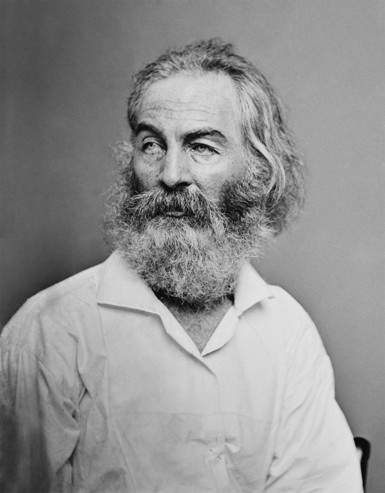

|
Walter "Walt" Whitman was an American poet, essayist, and journalist. A humanist, he was a part of the transition between transcendentalism and realism, incorporating both views in his works. Whitman is among the most influential poets in the American canon, often called the father of free verse. His work was very controversial in its time, particularly his poetry collection Leaves of Grass, which was described as obscene for its overt sexuality.
Born in Huntington on Long Island, Whitman worked as a journalist, a teacher, a government clerk, and—in addition to publishing his poetry—was a volunteer nurse during the American Civil War. Early in his career, he also produced a temperance novel, Franklin Evans (1842). Whitman's major work, Leaves of Grass, was first published in 1855 with his own money. The work was an attempt at reaching out to the common person with an American epic. He continued expanding and revising it until his death in 1892. After a stroke towards the end of his life, he moved to Camden, New Jersey, where his health further declined. When he died at age 72, his funeral became a public spectacle.
Early Life
Walter Whitman was born on May 31, 1819, in West Hills, Town of Huntington, Long Island, to parents with interests in Quaker thought, Walter and Louisa Van Velsor Whitman. The second of nine children. he was immediately nicknamed "Walt" to distinguish him from his father. Walter Whitman, Sr. named three of his seven sons after American leaders: Andrew Jackson, George Washington, and Thomas Jefferson. The oldest was named Jesse and another boy died unnamed at the age of six months. The couple's sixth son, the youngest, was named Edward. At age four, Whitman moved with his family from West Hills to Brooklyn, living in a series of homes, in part due to bad investments. Whitman looked back on his childhood as generally restless and unhappy, given his family's difficult economic status. One happy moment that he later recalled was when he was lifted in the air and kissed on the cheek by the Marquis de Lafayette during a celebration in Brooklyn on July 4, 1825.
At age eleven Whitman concluded formal schooling. He then sought employment for further income for his family; he was an office boy for two lawyers and later was an apprentice and printer's devil for the weekly Long Island newspaper the Patriot, edited by Samuel E. Clements. There, Whitman learned about the printing press and typesetting. He may have written "sentimental bits" of filler material for occasional issues. Clements aroused controversy when he and two friends attempted to dig up the corpse of Elias Hicks to create a plaster mold of his head. Clements left the Patriot shortly afterward, possibly as a result of the controversy.
Writing
Whitman's work breaks the boundaries of poetic form and is generally prose-like. He also used unusual images and symbols in his poetry, including rotting leaves, tufts of straw, and debris. He also openly wrote about death and sexuality, including prostitution. He is often labeled as the father of free verse, though he did not invent it.
Poetic theory
Whitman wrote in the preface to the 1855 edition of Leaves of Grass, "The proof of a poet is that his country absorbs him as affectionately as he has absorbed it." He believed there was a vital, symbiotic relationship between the poet and society. This connection was emphasized especially in "Song of Myself" by using an all-powerful first-person narration. As an American epic, it deviated from the historic use of an elevated hero and instead assumed the identity of the common people. Leaves of Grass also responded to the impact that recent urbanization in the United States had on the masses.
|

Walt Whitman (1819-1892)
|